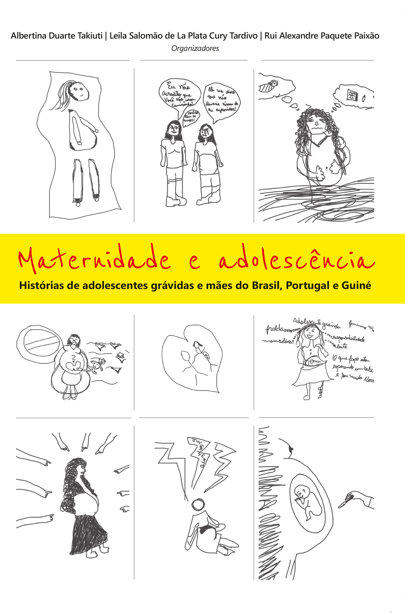

Livros Novos
147. A Bioética Social e suas implicações filosóficas Christian de Paul de Barchifontaine / Marcos Aurélio Trindade (Orgs.) Editora: Gênio Criador (1ª edição, 2019) Formato: 14x21 cm; Capa comum. ISBN: 978-85-94269-23-2 VALOR: R$ 60,00 +FRETE R$ 18,00 = R$ 78,00 FRETE PAC PRAZO DE ENTREGA 11 DIAS.
Figura 23 - Christian de Paul de Barchifontaine / Marcos Aurélio Trindade (Orgs.).“ A Bioética Social e suas implicações filosóficas” (2019).
Compre Agora
148. Nobrow - O inclassificável internacionalizado, de Janaína Quintas Antunes.Formato: 14x21 cm; Capa comum; Idioma: Português ;Editora: Gênio Criador (1ª edição, 2019) ISBN: 978-85-94269-15-7 VALOR: R$ 65,00 + FRETE R$ 18,00= R$ 83,00 PAC PRAZO DE ENTREGA 11 DIAS.

Figura 24 - Janaína Quintas Antunes.“Nobrow - O inclassificável internacionalizado” (2019).
Compre Agora
149. Maternidade e Adolescência - histórias de adolescentes grávidas e mães do Brasil, Portugal e Guiné Albertina Duarte Takiuti / Leila Salomão de La Plata Cury Tardivo / Rui Alexandre Paquete Paixão (orgs.)
Albertina Duarte Takiuti / Leila Salomão de La Plata Cury Tardivo / Rui Alexandre Paquete Paixão (orgs.). VALOR: R$ 55,00 + R$ 18,00 FRETE = R$ 73,00 FRETE PAC PRAZO DE ENTREGA 11 DIAS.>Figura 25 -Albertina Duarte Takiuti / Leila Salomão de La Plata Cury Tardivo / Rui Alexandre Paquete Paixão (orgs.) , Maternidade e Adolescência - histórias de adolescentes grávidas e mães do Brasil, Portugal e Guiné . Formato: 14x21cm - Capa Comum Idioma: Português Editora: Gênio Criador (1ª edição, 2019) ISBN: 978-85-94269-19-5
Compre Agora151. Estudos sobre a Criatividade - Comunicação e Inovação em debate Cleusa Kazue Sakamoto / Sérgio José Andreucci Junior (orgs.) VALOR: R$ 56,00 + R$ 18,00 FRETE= R$ 74,00 FRETE PAC PRAZO DE ENTREGA 11 DIAS Cleusa Kazue Sakamoto / Sérgio José Andreucci Junior (orgs.) >
Figura 26 -Cleusa Kazue Sakamoto / Sérgio José Andreucci Junior (orgs.) , Estudos sobre a Criatividade - Comunicação e Inovação em debate Formato: 14x21cm - Capa Comum Idioma: Português Editora: Gênio Criador (1ª edição, 2019) ISBN: 978-85-94269-22-5
Compre Agora152. DIALOGOS INTERDISCIPLINARES NORBERTO STORI (ORG.) VALOR: R$ 56,00 + R$ 18,00 = R$74,00 FRETE PAC PRAZO DE ENTREGA 11 DIAS. NORBERTO STORI (ORG.) >
Figura 27 -NORBERTO STORI (ORG.) , 152. DIALOGOS INTERDISCIPLINARES Formato: 14x21cm - Capa Comum Peso: 330g Idioma: Português Editora: Gênio Criador (1ª edição, 2019) ISBN: 978-85-94269-14-0
Compre Agora153. TERRITORIOS E TERRITORIALIDADES: ESTUDOS INTERDISCIPLINARES Organizadoras: Rosana M. P. B. Schwartz; Lucia Helena Bettini; Bethina Oger Garcia VALOR: R$ 60,00 + R$ 18,00 FRETE= R$ 78,00 FRETE PAC PRAZO DE ENTREGA 11 DIAS.
 Organizadoras: Rosana M. P. B. Schwartz; Lucia Helena Bettini; Bethina Oger Garcia>
Organizadoras: Rosana M. P. B. Schwartz; Lucia Helena Bettini; Bethina Oger Garcia> Figura 28 -Organizadoras: Rosana M. P. B. Schwartz; Lucia Helena Bettini; Bethina Oger Garcia, TERRITORIOS E TERRITORIALIDADES: ESTUDOS INTERDISCIPLINARES Formato: 14x21 cm Capa comum Idioma: Português Editora: Gênio Criador (1ª edição, 2019) ISBN: 978-85-94269-11-9
Compre Agora155. Rupturas: olhares criativos e novos tecidos conceituais Organizadoras: Cleusa K. Sakamoto e Regina Célia F. A. Giora. Valor: R$ 68,00 + R$ 18,00 FRETE= R$ 86,00 FRETE PAC PRAZO DE ENTREGA 11 DIAS.

Figura 29 - Organizadoras: Cleusa K. Sakamoto e Regina Célia F. A. Giora..“Rupturas: olhares criativos e novos tecidos conceituais ” Capa Comum (com orelhas) - 424 páginas
Idioma: Português
Editora: Gênio Criador Editora, 2018 - 1ª Edição.
ISBN: 978-85-94269-08-9
Formato: 14 x 21 cm
Compre Agora
156. Legenda Cinética: Tipografia em Movimento e Traduções Narrativas Autor: Christian David Rizzato Petrini Valor: R$ 43,00 + R$ 18,00 FRETE = R$ 61,00 REMESSA VIA PAC PRAZO DE ENTREGA 11 DIAS.
Figura 30 -Christian David Rizzato Petrini, Legenda Cinética: Tipografia em Movimento e Traduções Narrativas Capa comum: 236 páginas Editora: Gênio Criador Editora; Edição: 1ª (2018) Idioma: Português ISBN-10: 8594269065 ISBN-13: 978-8594269065
Compre Agora157. Criatividade e Longevidade: Um Olhar da Educação, Arte e Cultura Autor: Regina Célia Faria Amaro Giora (org.) Valor: R$ 59,00 + R$ 18,00 FRETE = R$ 77,00 REMESSA VIA PAC PRAZO DE ENTREGA 11 DIAS.

Figura 31 - Regina Célia Faria Amaro Giora (org.).“Criatividade e Longevidade: Um Olhar da Educação, Arte e Cultura ” Detalhes:
Capa comum: 502 páginas
Editora: Gênio Criador Editora; Edição: 1ª (2017)
Idioma: Português
ISBN-10: 859426903X
ISBN-13: 978-8594269034
Peso: 544 g
Compre Agora
158. Interações Digitais e o Consumo do Livro Autor: Alessandra de Castro Barros Marassi Valor: R$ 42,00 + R$ 18,00 FRETE = R$ 60,00 REMESSA VIA PAC PRAZO DE ENTREGA 11 DIAS.
Figura 32 -Alessandra de Castro Barros Marassi, Interações Digitais e o Consumo do Livro Detalhes: Capa comum: 154 páginas Editora: Gênio Criador Editora; Edição: 1ª (2017) Idioma: Português ISBN-10: 8594269013 ISBN-13: 978-8594269010 Peso: 136 g Dimensões da Embalagem: 18 x 12 x 2 cm
Compre Agora159. Entre a Carne e o Verbo: Confissão, Sexualidade e Discurso em Michel Foucault Autor: Thiago Calçado Valor: R$ 45,00 + R$ 18,00 FRETE = R$ 63,00 REMESSA VIA PAC PRAZO DE ENTREGA 11 DIAS.